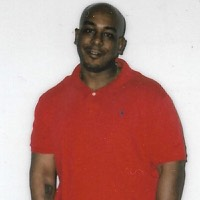
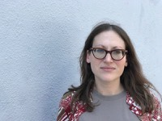
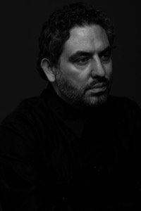
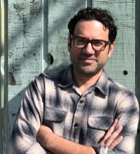

UC Berkeley
35 people whose festival biography mentions UC Berkeley. A mention can mean a job, a past job, a grant, a broadcast or an award: read the bio for which.


 Hanna Lane MillerPanelist, filmmaker · 2 editions, 2018–2025
Hanna Lane MillerPanelist, filmmaker · 2 editions, 2018–2025 Rachel Lauren Mueller · Anne Sundberg · Yoruba RichenFilmmaker, panelist · 2 editions, 2022–2026
Rachel Lauren Mueller · Anne Sundberg · Yoruba RichenFilmmaker, panelist · 2 editions, 2022–2026 Michaela VatchevaPanelist · 2 editions, 2020–2021
Michaela VatchevaPanelist · 2 editions, 2020–2021 Traci A. Curry (co-)Filmmaker, panelist · 2021
Traci A. Curry (co-)Filmmaker, panelist · 2021- Anne AlverguePanelist · 2019

Corey Devon ArthurPanelist, filmmaker · 2025 Victoria BaranetskyPanelist · 2021
Victoria BaranetskyPanelist · 2021 Maggie BowmanPanelist · 2021
Maggie BowmanPanelist · 2021 Katherine Fehr ChandlerPanelist · 2021
Katherine Fehr ChandlerPanelist · 2021- Carolyn ChenFestival team · 2022

- Luisa ConlonFilmmaker · 2018
 Violet Du FengPanelist · 2021
Violet Du FengPanelist · 2021 Cynthia GalliPanelist · 2021
Cynthia GalliPanelist · 2021 Nathan HalversonFilm subject, panelist · 2022
Nathan HalversonFilm subject, panelist · 2022- Jennifer HuangPanelist · 2019
- Dan KraussPanelist · 2015
 Libby LiuPanelist · 2026
Libby LiuPanelist · 2026
Bernardo Ruiz2024
 Jane SasseenPanelist · 2021
Jane SasseenPanelist · 2021 Sasha SchellPanelist · 2026
Sasha SchellPanelist · 2026 Meg ShutzerFilmmaker, panelist · 2022
Meg ShutzerFilmmaker, panelist · 2022
Jacob SimasPanelist · 2021 Amina WaheedFilmmaker · 2021
Amina WaheedFilmmaker · 2021 Haley WillisPanelist · 2021
Haley WillisPanelist · 2021